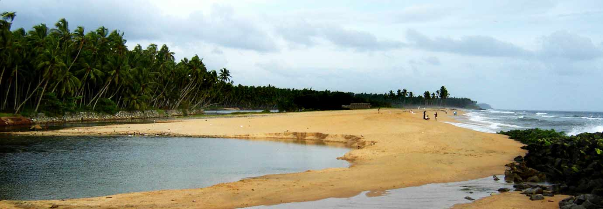
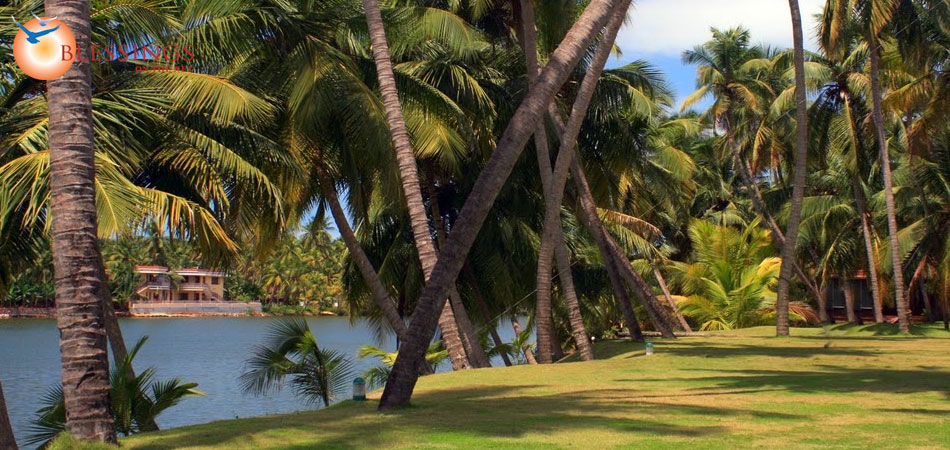
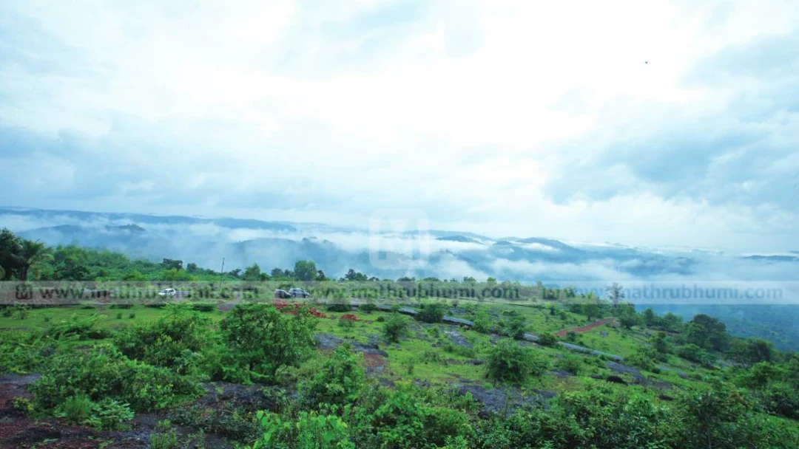

PLACES TO VISIT IN KASARGOD
Bekal Fort

Built in the 17th century, the Bekal Fort is one of the most well maintained historic sites in Kerala. It is situated 40 m above the waves of the Arabian Sea that lunge themselves towards the citadels of the fort. There is an observation tower at the centre and a peripheral walkway that offer a breathtaking view of the sea. The Pallikere Beach lies next to the fort where one can spend an idle moment watching the waves curl up towards the shore or take a long walk. The Bekal hole aqua park nearby and boat rides to the backwaters are added attractions.
Chandragiri Fort

The fort built by Shivappa Nayak in the 17th century stands atop a beautiful hill situated near the confluence of the Payaswini River and the Arabian Sea. Though the fort is in ruins, the spectacular view of the meandering river it offers is something you wouldn’t want to miss.
Malik Ibn Dinar Mosque

The mosque located at Thalangara, Kasargod, is believed to have been founded by Malik Ibn Dinar. The mosque has the grave of Malik Ibn Mohammed, one of the descendants of Malik Ibn Dinar and the place is sacred to Muslims.the original mosque built by Dinar was a small structure with a thatched roof, but later his followers built an elaborate structure that almost resembles a palace.
Ananthapura Temple

The only lake temple in Kerala, the Ananthapura Temple was built in the 9th century. Located on the Kumbla-Badiyadka Road, about 14 km north from Kasargod Town, the sanctum of the temple situated in the middle of a scenic lake, can be reached only by a bridge. The walls of the sanctum are covered with mural paintings depicting the stories of the Vedas. A crocodile is said to inhabit the lake and only one has been spotted in it since time immemorial.
Kappil Beach

Apart from its palm-fringed shore and casuarina groves, the Kappil Beach is also known for its clean and unpolluted surroundings. The Kodi Cliff near the Beach offers a wonderful view of the sea and beach. The Pallikunnam Temple, 2 km away is another place you can visit.
Nileshwaram

A tranquil town which is known for its pristine beaches, forests and backwaters, Nileshwaram is situated 40 kms north of Kasargod Town. This sleepy hamlet is not quite a tourist hub, yet the natural beauty of its beaches such as the Thaikandapuram Beach, or the historic allure of its rock-cut caves at Ummichipoyil and Varikulam, or the opportunities for spiritual salvation at its temples, churches and mosques make it a place that must be visited.
Bekal Beach

There is a sea side pathway with a magnificent view of the fort to the east and the sea to the west linking the beaches north and south of the battlement. The Pallikere beach with its shallow waters is just a kilometre away from the fort. Due to its historic relevance, the fort is controlled by the Archaeological Survey of India. Coins and other historical artifacts were unearthed by archeologists making it an interesting excavation site. Bekal is also one among the five centres selected by the Government of India to be developed into a 'Special Tourism Area'.
Possadi Gumpe

A small hill resort located on the east of Manjeshwaram, Possadi Gumpe is an ideal picnic spot. 323 m above sea level, Possadi Gumpe is reminiscent of the beautiful valleys of Ooty. It is the perfect place for a long trek through the woods. Konakkad and Ranipuram are also ideal trekking territories.
Madhur Sree Madananteshwara Vinayaka Temple

One of the four temples built by the Mypadi Kings of Kumbla, , the 10th century temple of Madhur Sree Madananteshwara Vinayaka is the most renowned in terms of architecture and importance. The temple was renovated in the 15th century and built in a very unique style. The three storied oval structure has its two highest roofs covered with copper plates.